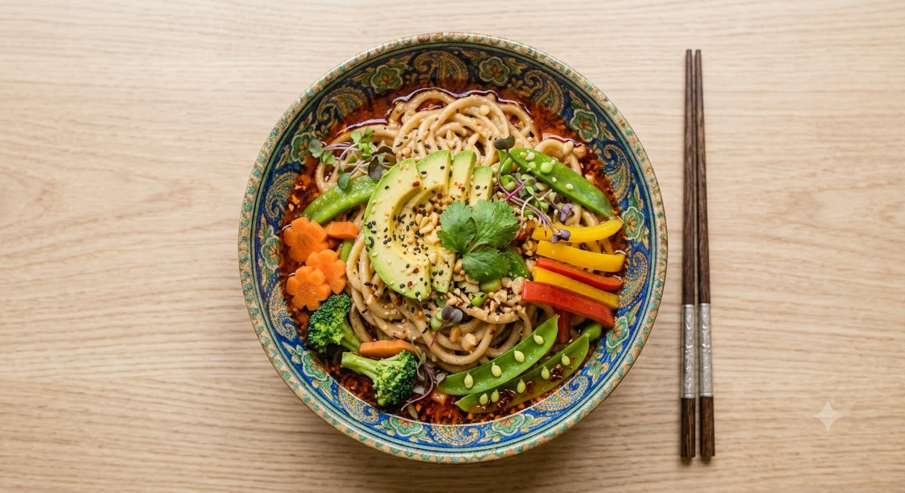
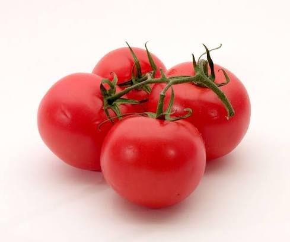
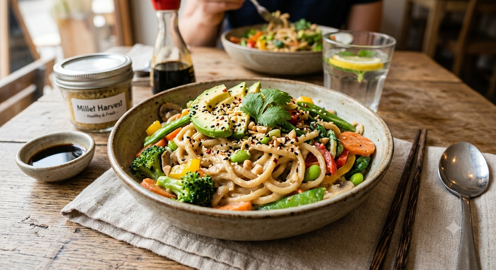

Discover tasty recipes made using our nutritious millet noodles. Packed with flavour, easy to prepare, and perfect for every family meal.


A delicious bowl packed with nutrition, fresh vegetables, and the goodness of millet noodles.

A wholesome noodle bowl loaded with colourful vegetables, creamy sauce, and protein-rich millet noodles. Perfect for lunch, dinner, or a quick weekend treat.
Try these delicious recipes made using our nutritious millet noodles.


Small changes in your cooking habits can make every meal healthier and tastier.
Add colourful vegetables like carrots, capsicum, broccoli, and corn to increase nutrition.
Millet noodles provide more fibre and nutrients than traditional refined noodles.
Drink plenty of water throughout the day to complement a healthy lifestyle.
Fresh herbs and homemade sauces add flavour naturally without excess preservatives.
Get delicious millet noodle recipes, cooking ideas, and healthy meal inspiration—all in one beautifully designed recipe book.